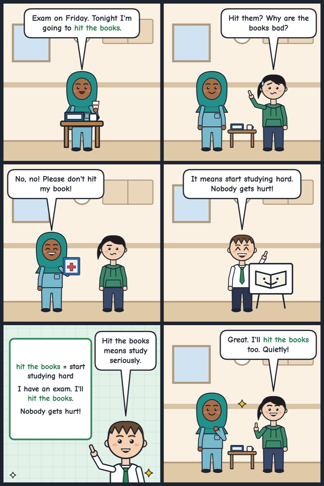

hit the books
To start studying seriously.
I can't come out tonight. I have to hit the books.
Hit the books means to start studying seriously. We say it before an exam or a test.
Your turn
When do you usually hit the books? Write a sentence!
When do you usually hit the books? Write a sentence!
See it in a comic
